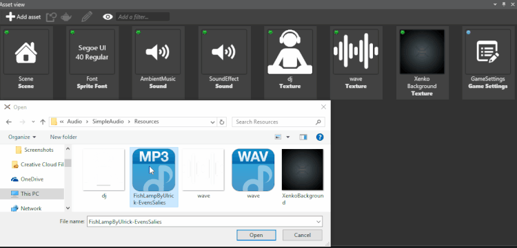
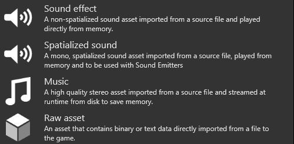
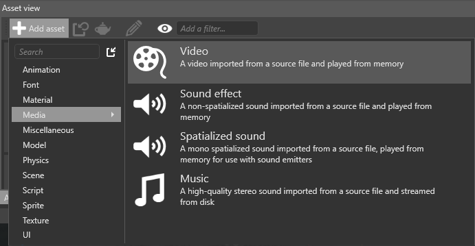
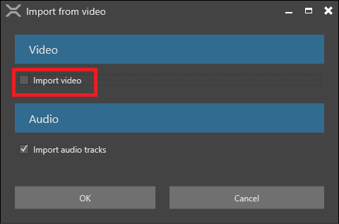

Импорт звуковых файлов
Начинающий Дизайнер
Вы можете импортировать аудиофайлы для использования в качестве аудиоактивов (audio assets) в вашем проекте. Вы можете импортировать такие типы файлов, как: .wav, .mp3, .ogg, .aac, .aiff, .flac, .m4a, .wma, и .mpc.
Перетащите аудиофайл из проводника Windows в Просмотр активов (Asset View).:

В качестве альтернативы, в Просмотре активов (Asset View):
Нажимите

Нажимите (Импортировать аудио напрямую из файла (Import audio directly from file)) и выберите аудиофайл.
Чтобы присвоить аудиоресурсу некоторые свойства по умолчанию, выберите предустановку. (Вы всегда можете изменить свойства в Сетке свойств позже.)

Звуковой эффект (Sound effect): Рекомендуется для небольших файлов, которые вы хотите воспроизводить непосредственно из памяти.
Пространственный звук (Spatialized audio): Подготовить аудиоактив как пространственный звук. Обратите внимание, что Stride обрабатывает аудиофайлы как моно (одноканальный) звук. Исходный файл не затрагивается.
Музыка (Music): Рекомендуется для больших файлов, которые вы хотите транслировать с диска для экономии памяти.
После импорта аудиофайла вы можете выбрать его в качестве актива в Просмотре активов (Asset View)..
Импорт звука из видеофайла
Вы также можете импортировать видео файл и выбрать импорт только аудиодорожек из него.
В Просмотре активов (Asset View), нажимите Добавить актив (Add asset) и выберите Media > Video.

Найдите видео, из которого вы хотите импортировать звук, и нажмите Открыть (Open).
Либо перетащите файл из Проводника в Просмотр активов (Asset View).
Снимите галку Импорт видео (Import video) и нажмите OK.

Stride добавит аудиодорожки из видео в Просмотр активов (Asset View).